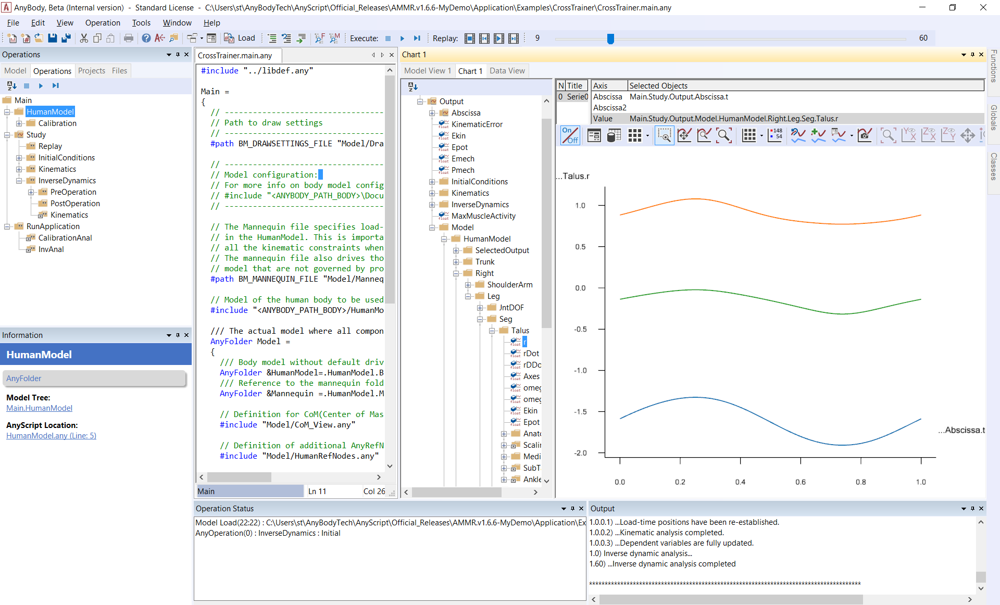
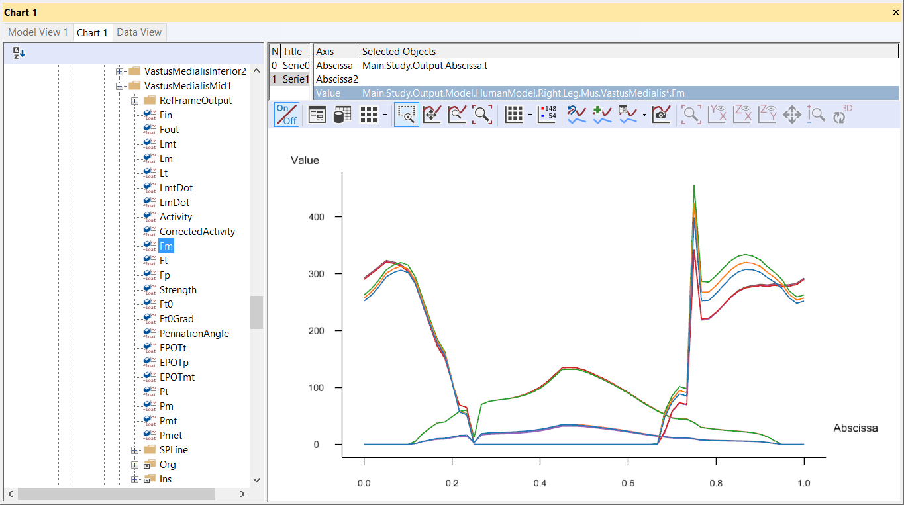
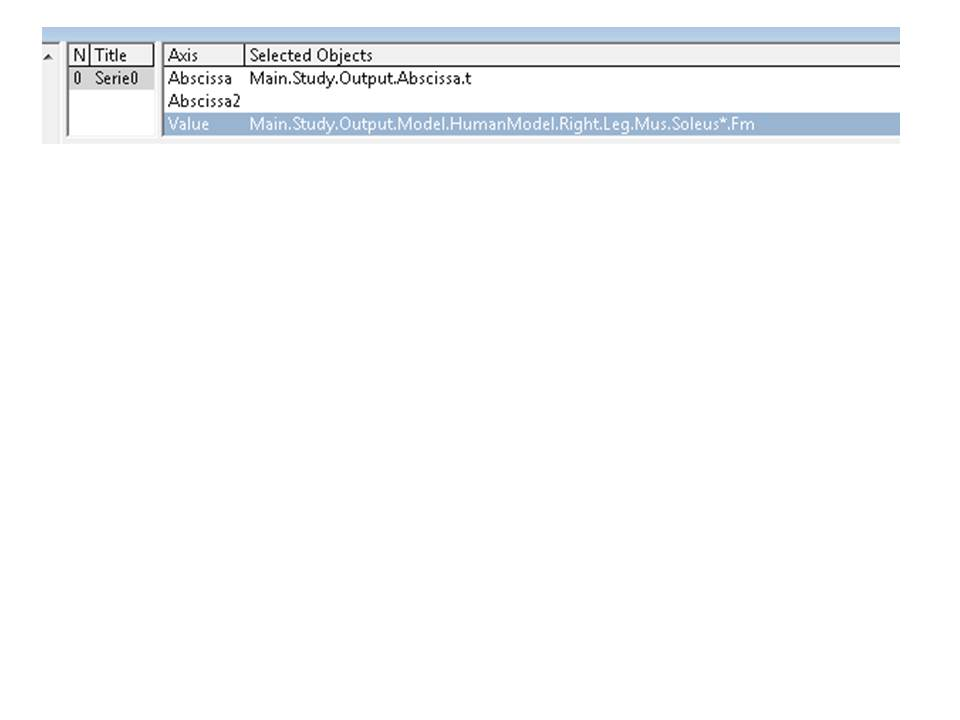

Lesson 3: The Chart View¶
The AnyBody Modeling System has the Chart View for displaying results:
The Chart View gives you the opportunity to make two-dimensional line plots and three-dimensional surface plots. You can make identical charts in the Chart View and inside the model scene, i.e., in Model View.

We will use the CrossTrainer model from the previous tutorial and investigate the results (see details on how to load and run the model in the previous tutorial)
- Once the operation is complete, open the Chart View by clicking the Chart tab in the Model View.
- Notice that the window is divided into a tree pane on the left and the actual data area to the right.
- The tree in the Chart View has been filtered so that you only see the output data. This particular category of data only becomes available when an operation is started. To reach the output data, expand the tree through Main.Study.Output.
Global output data¶
Directly below the tree’s Output node, you will find data pertaining to the »global« properties of the model:
- Ekin - the total kinetic energy of the system
- Epot - the total potential energy of the system
- Emech - the total mechanical energy of the system, i.e. the sum of potential and kinetic energies
- Pmech - the mechanical power of the system
To plot some different data e.g. by clicking Ekin, Epot, and Emech in turn.
Time-dependent data¶
The usual way of looking at data is as a function of time or rather time steps. If you expand the Model branch down to the HumanModelHumanModel.Right.Leg.Seg section, you can investigate the movement of e.g. a foot segment. Expand the tree until you get to the Talus object as shown to the left. Then click the r property. This displays three curves on the screen corresponding to the x, y, and z coordinates of the talus’ reference frame. The color codes of the chart view are red, green and blue in that order, so red is for x, green is for y, and blue is for z.

Let us look at more complex data, let us find the muscles in the tree by expanding to Main.Study.Output.Model.HumanModel.Right.Mus. Take the first muscle, SoleusMedialis1SoleusMedialis1, and click the Fm property.

An asterisk (``*``) serves as a placeholder in the Chart; if you click in the Value field and type an asterisk instead of “Medialis1”, you will see all Soleus muscles (muscles whose names start with Soleus).

If you choose SelectedOutput in the model tree, you will find some pre-chosen quantities that are useful from a biomechanical point of view, for example, joint reaction forces, moments and muscle envelopes.
Detailed data investigation¶
If you hold the mouse pointer still above the curve for a moment, a small box will pop up and give you the name of the data series and the value at the current cursor position (interpolated if between data points).
Working with several Series¶
You can plot several data series in the same Chart View. If we, for example, want to compare the muscle force of the Soleus muscles to the VastusMedialis muscles, we press the button ‘Add series’, select the FM property of a VastusMedialis muscle from the tree and use the asterisk to show all the muscles the same way as we did it before.

Exporting data¶
Basically, there are two options for exporting your data. You can export the graph as an image or as a data matrix. You can also save the graph as a separate file using or copy it to the clipboard and insert it into an existing file.
Copy to clipboard :
- As a bitmap picture
- As text: copies the graph data to the clipboard in text format. You can paste them into a spreadsheet or a text editor.
- As a hi-res bitmap picture
- To Python Matplotlib chart: This function is currently in testing
Save as image file using the icon , file name, location and type can be selected:
{kind=link}
- Bitmap, jpg, gif, png or tiff picture:
- Text or CSV data file: Saves plot data in CSV format in column formatted text file.
- Python file: Exports as python script creating a plot using the library Matplotlib.
A word of caution regarding the text option: Different countries have different conventions for decimal numbers. Some use a point as decimal separator, and some use a comma. The numbers copied to the clipboard from the Chart View follow the nationality settings for the decimal point or comma.
User-defined abscissa and 3D graphs¶
The default abscissa in the chart view is time. However, you can in principle plot data against any scalar property the system has computed. For this, replace the Main.Study.Output.Abscissa.t specification in the Abscissa specification line.

Alternatively, you can add a second abscissa to create a 3D graph. More icons will be activated when a second abscissa is identified. Typically these 3D graphs are used in parameter studies and optimizations. More detailed information is available in the “Parameter studies and optimization“ tutorial.
Se også
Next lesson: Lesson 4: The Model Tree and Object Description.